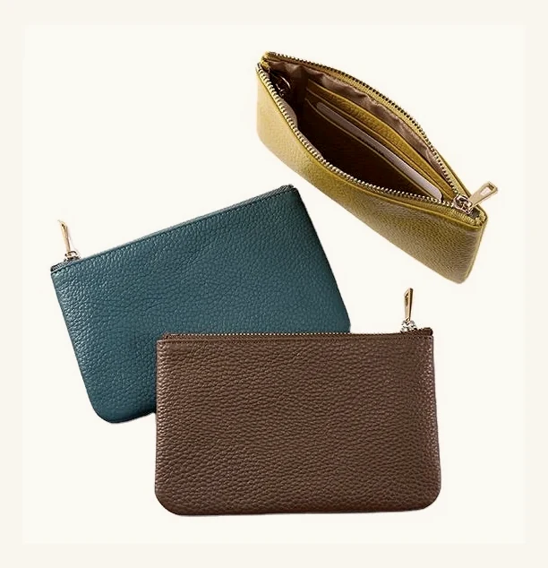

Classic Leather
Coin Case
A compact leather coin case reference for private-label sampling, zipper review and logo customization.
This page is a development reference for OEM and private-label projects, not a ready-stock retail listing.

Reference Details for Buyer Review
These references help start a sampling discussion. Final specifications can be adjusted depending on material, zipper, logo method and order details.
Reference Views for Sampling Review
Use these views to review pouch structure, zipper direction, leather surface and possible logo placement before sample development.


Additional zipper, inner capacity and logo-position photos can be prepared during sample discussion.
Coin Case Details Buyers Usually Confirm
The structure can be refined around the buyer's brief, target use, zipper preference and sample feedback.
Customization Options for Private-Label Orders
HASSION supports compact coin case development from first reference through sample confirmation and production planning.
What to Send Us for a Faster Quote
A clear brief helps the team review feasibility, sampling details and production planning more quickly.
- Reference photo or physical sample
- Target size and inner capacity
- Zipper or closure preference
- Logo file or branding requirement
- Leather / color direction
- Estimated order quantity
- Packaging requirement
- Target market or retail price range, if available
Start a Coin Case OEM Project
Share your reference, logo file, target quantity and zipper preference. Our team can help review structure, sampling details and production feasibility.